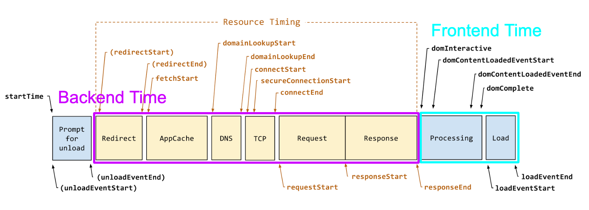
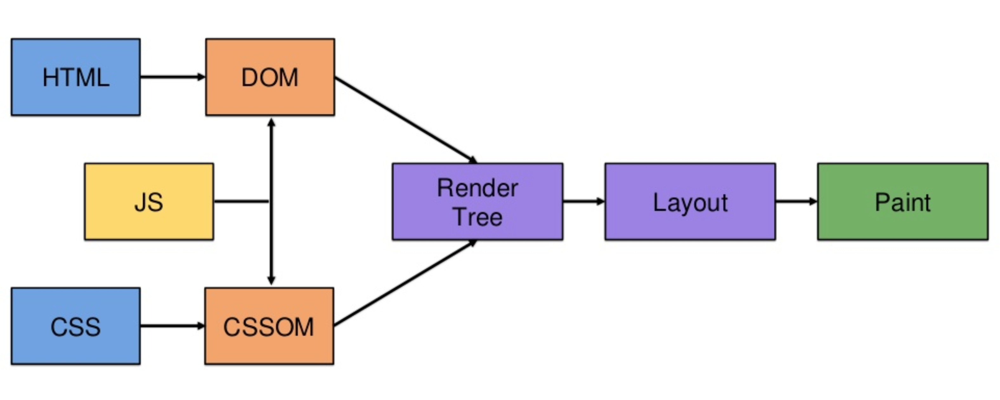
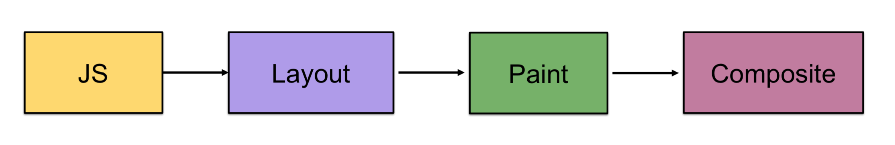

웹의 초창기에는 마크업 문서 작성시 <body> 태그를 빼 먹거나, 닫아야 하는 태그를 닫지 않으면 브라우저가 HTML 을 제대로 파싱하지 못하였습니다. 때문에 종종 화면에 깨진 UI 가 표시되기도 하였습니다. 하지만 오늘 날 대부분의 모던 브라우저는 예외 처리가 아주 잘 되어 있어 대부분의 좋지 못한 경우에도 예상한 DOM Tree 를 만들어 줍니다. 오히려 예전보다 덜 신경쓰며 작업 해도 브라우저가 예상한 화면으로 잘 렌더링 해주는거죠.
이처럼 브라우저의 성능이 점점 향상되고 스마트해 짐에 따라 렌더링 방법을 이해하지 않고 작업해도 대부분의 웹 페이지와 애플리케이션은 잘 동작합니다. 그런데도 우리는 왜 브라우저의 렌더링 프로세스에 대해 알고 있어야 할까요?
사용자가 웹 페이지를 이탈하지 않고 서비스에 더 오래 머물게 하는 중요한 요소중 하나인 웹 애플리케이션 응답 속도 때문입니다.

속도 개선을 위한 성능 최적화 작업은 Backend, Frontend 모든 영역에서 작업 되어야 하지만 드라마틱한 개선을 위해서는 브라우저 렌더링 최적화가 반드시 고려되어야 합니다.
Critical Rendering Path 라는 브라우저 렌더링 과정을 이해하고 각 단계에서 어떤 일이 일어나는지 파악할 수 있어야 브라우저 렌더링 최적화를 통한 어플리케이션의 응답 속도를 개선할 수 있기 때문에 브라우저 렌더링 과정에 대해 이해하는 것은 생각보다 중요합니다.
How does web browser work?
아래 이미지는 웹 브라우저가 서버로 요청을 보내고 응답 받아 화면을 그리는 일련의 과정으로 Backend Time, Frontend Time 으로 구분하여 웹 브라우저가 어떻게 화면을 표시하는지 보여주고 있습니다.

이번 포스트에는 브라우저의 렌더링 방식에 대해서 알아보기 위한 포스트로
Frontend Time을 중점적으로 다룹니다.
- Backend Time
- 렌더링 준비 단계로 HTML 및 기타 Resources 를 수신합니다.
- Frontend Time
- 렌더링 실행 단계로 Render Tree 를 생성하고 Layout 및 Paint 를 시도합니다.
간략하게 웹 브라우저가 동작하는 과정을 살펴봤습니다. 이제 Frontend Time 에서 일어나는 렌더링 과정에 대해 알아보도록 하겠습니다.
Critical Rendering Path
웹 브라우저의 렌더링 과정을 Critical Rendering Path(CRP) 라고 하며 아래 이미지와 같은 과정을 거쳐 그래픽 요소를 화면에 그리게 됩니다.

CRP 각 과정에서 처리되는 내용을 간략하게 살펴보면 아래와 같습니다.
- HTML 마크업을 처리하고 DOM 트리를 빌드합니다.
- Parse HTML
- Build DOM Tree
- CSS 마크업을 처리하고 CSSOM 트리를 빌드합니다.
- Parse Stylesheet
- Build CSSOM Tree
- DOM 및 CSSOM을 결합하여 렌더링 트리를 형성합니다.
- Calculate Style
- Build Render Tree (DOM + CSSOM)
- 렌더링 트리에서 레이아웃을 실행하여 각 노드의 기하학적 형태를 계산합니다.
- Layout
- Update Layer Tree
- 개별 노드를 화면에 페인트합니다.
- Paint
- Raster
- Composit Layer
페이지 초기 렌더링 이후 UI의 상태가 변경되어도 위 프로세스의 전체 혹은 일부를 거쳐 화면이 그려지게 됩니다. 따라서 Critical Rendering Path 를 최적화(1단계~5단계를 수행할 때 걸린 총 시간 최소화) 하면 초기 컨텐츠를 화면에 빠르게 렌더링할 수 있을 뿐만 아니라 초기 렌더링 후 화면 업데이트 시간도 줄일 수 있습니다.
Critical Rendering Path 의 각 프로세스에 대해 좀 더 자세히 알아보겠습니다.
Build DOM Tree
Document Object Model 은 브라우저가 웹 페이지를 잘 핸들링 하기 위해 필요한 객체입니다. 브라우저는 수신받은 HTML 을 가지고 Bytes > Characters > Tokens > Nodes > DOM 의 과정을 거쳐 DOM Tree 를 만듭니다.

- 변환 (Bytes -> Characters)
- 브라우저가 HTML의 원시 바이트를 디스크나 네트워크에서 읽어와서, 해당 파일에 대해 지정된 인코딩(예: UTF-8)에 따라 개별 문자로 변환합니다.
- 토큰화 (Character -> Tokens)
- 브라우저가 문자열을 W3C HTML5 표준에 지정된 고유 토큰으로 변환합니다(예:
<html>,<body>및 꺽쇠괄호로 묶인 기타 문자열). 각 토큰은 특별한 의미와 고유한 규칙을 가집니다.
- 브라우저가 문자열을 W3C HTML5 표준에 지정된 고유 토큰으로 변환합니다(예:
- 렉싱 (Tokens -> Nodes)
- 방출된 토큰은 해당 속성 및 규칙을 정의하는 '객체’로 변환됩니다.
- DOM 생성 (Nodes -> DOM)
- 마지막으로, HTML 마크업이 여러 태그(일부 태그는 다른 태그 안에 포함되어 있음) 간의 관계를 정의하기 때문에 생성된 객체는 트리 데이터 구조 내에 연결됩니다. 이 트리 데이터 구조에는 원래 마크업에 정의된 상위-하위 관계도 포합됩니다. 즉, HTML 객체는 body 객체의 상위이고, body 는 paragraph 객체의 상위인 식입니다.
Build CSSOM Tree
수신된 CSS 규칙을 브라우저가 이해하고 처리할 수 있는 형식으로 변환하기 HTML 과 동일한 프로세스(Bytes > Characters > Tokens > Nodes > CSSOM)가 적용됩니다.

Build Render Tree
DOM 은 컨텐츠, CSSOM 은 스타일 규칙을 설명하는 독립적인 객체입니다. 각각의 객체를 가지고 화면에 픽셀을 찍기위해서는 두 객체를 합쳐 Render Tree 를 만들어야 합니다.
웹 브라우저는 아래 과정을 거쳐 DOM, CSSOM 을 Render Tree 로 만듭니다.

- DOM 트리의 루트에서 시작하여 표시되는 노드 각각을 트래버스합니다.
- 일부 노드는 표시되지 않으며(예: 스크립트 태그, 메타 태그, display none 속성을 가진 요소 등), 렌더링된 출력에 반영되지 않으므로 Render Tree 에서는 생략됩니다.
- 필요에 따라 1개 이상의 Layer 가 만들어집니다.
- Layer 중간에 GPU 처리가 필요하면 Graphic Layer 가 만들어집니다.
- 표시된 각 노드에 대해 적절하게 일치하는 CSSOM 규칙을 찾아 적용합니다.
- 표시된 노드를 콘텐츠 및 계산된 스타일과 함께 내보냅니다.
해당 프로세스의 최종 출력은 화면에 표시되는 모든 노드의 콘텐츠 및 스타일 정보를 모두 포함하는 Render Tree 입니다. Render Tree 가 생성되면 ‘Layout’ 단계를 진행합니다.
Layout (Reflow)
Render Tree 에는 노드와 노드의 스타일만 계산되어 있습니다. Layout 에서는 화면에 표시될 노드의 정확한 위치 및 크기를 계산합니다.
페이지에서 각 객체의 정확한 크기와 위치를 파악하기 위해 브라우저는 Render Tree 루트에서 부터 Render Tree 를 탐색하며 각 노드의 Box Type 을 확인합니다. Type이 Block 이면 세로로 Inline 이면 가로로 Box의 위치를 계산합니다.

최종 output 위와 같은 box model 로 각 Box 들의 크기 위치 높이를 가지게 됩니다.

이로써 노드와 계산된 스타일 그리고 화면 내에서 각 노드의 정확한 위치를 얻게됩니다.
Layout 과정이 완료되면 브라우저가 Paint 이벤트를 발생시켜 노드를 픽셀로 변화하는 ‘Paint’ 단계가 실행됩니다.
Paint, Rasterize, Composite Layer (Repaint)
Layout 과정을 거쳐 화면에 UI를 화면에 표현하기 위한 계산이 끝나면 Paint 과정을 거칩니다. Layout 과정에서 Render Layer가 2개 이상 생성되면 각각의 Layer 를 Painting 한 뒤 하나의 이미지로 Composite하는 과정을 추가로 거쳐 브라우저에 표현합니다.

- Paint / Rasterize
- Paint 는 Render Tree 를 화면의 픽셀로 변환하는 프로세스입니다. 이는 텍스트, 색, 이미지, 경계 및 그림자 등 요소의 모든 시각적 부분을 그리는 작업을 포함합니다.
그리기는 일반적으로 레이어라고 하는 다수의 표면에서 수행됩니다. 흔히 painting 또는 rasterizing 라고 하며 실제로 픽셀을 채우는 작업은 rasterize 라고 하며 paint 는 그릴 호출 목록을 생성합니다.
- Paint 는 Render Tree 를 화면의 픽셀로 변환하는 프로세스입니다. 이는 텍스트, 색, 이미지, 경계 및 그림자 등 요소의 모든 시각적 부분을 그리는 작업을 포함합니다.
- Composite
- 사용된 HTML이나 CSS 속성에 따라 여러개의 Layer 가 생성된 경우, 생성된 Layer 들을 합성하여 한장의 bitmap 으로 만드는 과정입니다. 각 Layer 별로 paint 되기 때문에 불필요한 painting 을 줄여 효율 적으로 그릴 수 있습니다.
‘mozilla.org’ Rendering Visualization
영상을 통해 Render Tree 생성 이후 Layout, Paint(Rasterize), Composite Layer 과정을 시각적으로 확인해 볼 수 있습니다.
Update UI
자바스크립트, CSS 또는 웹 애니메이션을 사용하여 시각적 변경을 수행할 때 주어진 프레임에 대해 아래의 프로세스 전체 또는 일부를 거쳐 화면이 업데이트 됩니다.

- 자바스크립트
- 일반적으로 자바스크립트는 jQuery의 animate 함수, 데이터 집합 정렬 또는 페이지에 DOM 요소 추가 등 시각적 변화를 일으키는 작업을 처리하는 데 사용됩니다. 하지만 반드시 자바스크립트로 시각적 변화를 트리거할 필요는 없습니다. CSS Animations, Transitions 및 Web Animations API도 널리 사용됩니다.
- 스타일 계산
- 이는 .headline 또는 .nav > .nav__item 등의 매칭 선택기에 따라 어떤 CSS 규칙을 어떤 요소에 적용할지 계산하는 프로세스입니다. 여기에서 규칙이 알려지면 적용되고 각 요소의 마지막 스타일이 계산됩니다.
- 레이아웃
- 브라우저가 요소에 어떤 규칙을 적용할지 알게 되면 화면에서 얼마의 공간을 차지하고 어디에 배치되는지 계산하기 시작할 수 있습니다. 웹의 레이아웃 모델은 한 요소가 다른 요소에 영향을 줄 수 있음을 의미합니다. 예를 들어, 요소의 너비는 일반적으로 하위 요소의 너비 등 트리의 위아래 모든 곳에 영향을 주며, 따라서 이 프로세스는 브라우저에 상당한 영향을 줄 수 있습니다.
- 페인트
- 페인트는 픽셀을 채우는 프로세스입니다. 이는 텍스트, 색, 이미지, 경계 및 그림자 등 요소의 모든 시각적 부분을 그리는 작업을 포함합니다. 그리기는 일반적으로 레이어라고 하는 다수의 표면에서 수행됩니다.
- 합성(Compositing)
- 페이지의 여러 부분이 잠재적으로 여러 레이어로 그려졌기 때문에 페이지가 정확히 렌더링되려면 정확한 순서로 화면에 그려야 합니다. 실수로 한 요소가 다른 요소 위에 잘못 나타날 수 있기 때문에 이는 다른 요소와 겹치는 요소가 있는 경우에 특히 중요합니다.
시각적 변경이 발생할 경우 처리 방법에 따라 아래 3가지 프로세스를 타게 됩니다.
주어진 CSS 속성을 변경하는 아래 세 가지 경우 중 어느 버전이 트리거될지 알고 싶은 경우 csstriggers.com 을 통해 어떤 속성 어떤 과정에 영향을 주는지 알 수 있습니다.
-
JS / CSS > 스타일 > 레이아웃 > 페인트 > 합성
레이아웃 너비, 높이, 왼쪽 또는 상단 위치 등 요소의 기하학적 형태에 영향을 주는 ‘layout’ 속성을 변경하면 브라우저가 다른 모든 요소를 확인하고 페이지에 대해 '리플로우’를 수행해야 합니다. 영향을 받은 영역이 있으면 다시 페인트해야 하고 최종적으로 페인트한 요소는 다시 합성해야 합니다.
-
JS / CSS > 스타일 > 페인트 > 합성

페이지의 레이아웃에 영향을 주지 않는 배경 이미지, 텍스트 색상 또는 그림자 등의 ‘paint only’ 속성을 변경하면, 브라우저가 레이아웃을 건너뛰되 페인트 작업은 여전히 수행합니다.
-
JS / CSS > 스타일 > 합성

레이아웃과 페인트가 필요 없는 속성을 변경하면 브라우저가 합성 단계로 건너뜁니다.
이 최종 버전은 앱의 수명 주기에서 애니메이션이나 스크롤처럼 많은 부담을 주는 시점에 가장 이상적이고 비용이 가장 적게 드는 버전입니다.
TIP
앞에서 Critical Rendering Path 살펴 보았습니다. 지금부터는 웹 브라우저 렌더링 최적화에 도움이 되는 몇가지 팁을 알아보도록 하겠습니다.
-
Navigation Timing API
Navigation Timing API 를 사용하면
Frontend Time의 내부 렌더링 프로세스를 들여다 볼 수 있습니다. 렌더링 프로세스를 추적하고 개선점을 찾고 싶다면 해당 Navigation Timing API 를 사용해 볼 수 있습니다.
위 이미지는 Navigation Timing API 을 통해 확인할 수 있는
Frontend Time의 각 단계를 나타내는 이미지로 각 라벨이 가지는 의미는 아래와 같습니다.- Processing
- domLoading
- 브라우저가 처음 수신한 HTML 문서 바이트의 파싱을 시작하려고 하는 상태입니다.
- domInteractive
- 브라우저가 파싱을 완료한 시점 즉, DOM이 준비된 상태입니다.
- 파서 차단 자바스크립트가 없으면 domInteractive 직후에 DOMContentLoaded 이벤트가 발생할 것입니다.
- domContentLoaded
- DOM이 준비되고 자바스크립트 실행을 차단하는 스타일시트가 없는 상태입니다. 즉, DOM 및 CSSOM이 모두 준비된 상태로 렌더링 트리를 생성할 수 있습니다.
- 많은 자바스크립트 프레임워크가 자체 로직을 실행하기 전에 이 이벤트를 기다립니다.
- domComplete
- 페이지 및 해당 하위의 모든 리소스가 준비된 상태입니다.
- 이름이 의미하는 바와 같이, 모든 처리가 완료되고 페이지의 모든 리소스(이미지 등) 다운로드가 완료되었습니다( 예: 로딩 스피너가 회전을 멈춤).
- domLoading
- Load
- loadEvent
- 각 페이지 로드의 최종 단계로, 브라우저가 추가 애플리케이션 로직을 트리거할 수 있는 상태로 onload 이벤트를 발생시킵니다.
- loadEvent
- Processing
-
Parser / Render Blocking Point Check
파싱, 렌더링이 차단되는 지점을 확인합니다.

- Javascript 를 명시적으로 비동기로 호출하지 않은 경우 DOM 생성을 차단합니다.
- HTML 문서 내 Inline 으로 작성된 Javascript 를 찾게되면 DOM 생성을 차단합니다.
- Parsing 중 CSS 를 만나면 DOM 생성을 차단하고 CSS 파일을 읽어 CSSOM 을 만듭니다.
-
Layer 활용하기
렌더링시 Painting, Rasterizing 할 대상 영역을 나누어 놓은 것을 Layer 라고 합니다.
Layer 를 사용하면 reflow 발생 시 global layouting 이 아닌 incremental layouting 을 발생시킬 수 있기 때문에 효율적으로 화면을 그릴 수 있습니다.- Layer 생성 조건
- position 관련 속성
- overflow, alpha 값
- css filter
- 3D transform, animation
<canvas>,<video>- scrollbar가 존재하는 경우 별도의 layer 생성하여 처리
- 같은 z-index의 레이어가 겹치는 경우 별도의 layer 생성하여 처리
- Graphic Layer 생성 조건
- css 3d transform이나 perspective 속성 사용 경우
- css animation 함수나 필터 함수 사용 경우
- video, canvas 사용 경우
- 자식 요소가 레이어로(UI) 사용된 경우
- z-index가 낮은 형제 요소가 레이어로 사용된 경우
- Layer 생성 조건
마무리
지금까지 웹 브라우저 렌더링 과정에 대해 알아봤습니다. 사실 UI 렌더링은 웹 브라우저가 잘 처리해 주고 있기 때문에 많은 프론트 개발자 분들이 등한시 할 수 있는 부분 이기도 합니다. 하지만 앞에서 살펴보았듯이 생각보다 중요한 부분이기 때문에 알아두면 좋을 것 같습니다.
잘 못된 내용이나 개선점이 있으면 피드백을 남겨주시면 반영하도록 하겠습니다.
읽어주셔서 감사합니다.